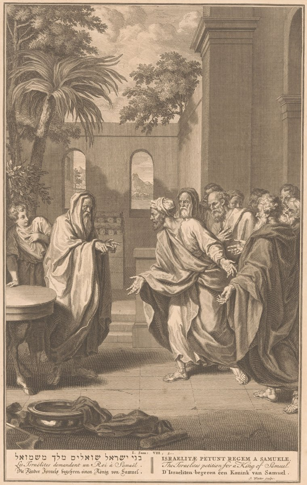

1 Samuel 8 — La Traducción Mister

Una lámina bíblica con leyenda en seis idiomas, que cita 1 Samuel 8:5. La línea hebrea dice bnei Yisra’el sho’alim melekh mi-Shmu’el, «los hijos de Israel piden un rey a Samuel», con el verbo sha’al del versículo 10, la raíz del nombre de Saúl.

Notas del traductor — versículo por versículo
Hijos como jueces. «Cuando Samuel envejeció, puso a sus hijos como jueces sobre Israel»: un juez entrega el cargo a sus hijos, donde Gedeón se había negado: «Yo no gobernaré sobre ustedes, ni mi hijo gobernará sobre ustedes» (Jueces 8:23, ya en estas páginas). Están en Beerseba, el extremo sur de la tierra en la expresión «desde Dan hasta Beerseba» (Jueces 20:1, ya en estas páginas). La RV60 tiene «y eran jueces en Beerseba»; la NVI «con sede en Berseba». Josefo pone a un hijo en Betel y al otro en Beerseba (Antigüedades 6.32, numerado 6.3.2 en Whiston). Crónicas enumera «el primogénito Vasni, y Abías», donde vashni se lee como «y el segundo» y falta el primer nombre, y más adelante en el mismo capítulo nombra a «Joel hijo de Samuel» (1 Crónicas 6:13 y 6:18 en el hebreo, 6:28 y 6:33 en las Biblias castellanas).
«Torcieron el juicio». «Sus hijos no anduvieron en sus caminos», como los hijos de Elí «no conocían a Jehová» (1 Samuel 2:12, ya en estas páginas): la segunda casa del libro cuyos hijos fallan. «Se torcieron tras la ganancia, y tomaron soborno, y torcieron el juicio»: el mismo verbo, natah, dos veces, y la frase quebranta la ley cláusula por cláusula: «No torcerás el juicio; no atenderás a un rostro; y no tomarás soborno» (Deuteronomio 16:19, ya en estas páginas). Ganancia es betsa, lo que los primeros jueces de Israel debían ser hombres que «aborrezcan» (Éxodo 18:21, ya en estas páginas); soborno es shochad; juicio es mishpat, una palabra que el capítulo volverá a usar. La RV60 tiene «se volvieron tras la avaricia, dejándose sobornar y pervirtiendo el derecho»; la TNM 1987 «se inclinaban a seguir tras ganancia injusta, y aceptaban sobornos y pervertían el juicio». Josefo hace de los hijos una lección de que los hijos no siempre salen a sus padres (Antigüedades 6.33).
«Como todas las naciones». Los ancianos van a Ramá: «Ahora, pon para nosotros un rey que nos juzgue, como todas las naciones». Son las palabras de la ley del rey: «Pondré sobre mí un rey, como todas las naciones que están a mi alrededor» (Deuteronomio 17:14, ya en estas páginas); «como todas las naciones» aparece en cuatro versículos de la Biblia hebrea: esa ley, este versículo, el versículo 20 y la burla de Moab en Ezequiel 25:8. Piden un rey «que nos juzgue», que haga el trabajo que ha hecho Samuel, después de un libro que termina «En aquellos días no había rey en Israel» (Jueces 21:25, ya en estas páginas). La RV60 tiene «constitúyenos ahora un rey que nos juzgue, como tienen todas las naciones»; la NVI «como lo tienen todas las naciones».
«Mala a los ojos de Samuel». «La cosa fue mala a los ojos de Samuel»: el giro de Jueces, «Los hijos de Israel hicieron lo malo ante los ojos de Jehová» (Jueces 2:11, ya en estas páginas), aquí sobre los ojos de Samuel. No responde a los ancianos; ora. La TNM 1987 tiene «aquella cosa fue mala a los ojos de Samuel»; la RV60 «Pero no agradó a Samuel esta palabra». Josefo dice que a Samuel le dolió por su amor innato a la justicia y su odio a los reyes, y que pasó la noche entera en vela y sin comer (Antigüedades 6.36–37, numerado 6.3.3 en Whiston).
«A mí me han rechazado». «No es a ti a quien han rechazado, sino que a mí me han rechazado para que no sea rey sobre ellos»: el verbo es ma’as, como en el desierto, «habéis rechazado a Jehová que está entre vosotros» (Números 11:20, ya en estas páginas), y el Rey es el del cántico junto al mar, «Jehová reinará por los siglos de los siglos» (Éxodo 15:18, ya en estas páginas). «Dejándome y sirviendo a otros dioses» es la acusación de Jehová en Jueces, «ustedes me dejaron y sirvieron a otros dioses» (Jueces 10:13, ya en estas páginas). La RV60 tiene «no te han desechado a ti, sino a mí me han desechado, para que no reine sobre ellos»; la TNM 1987 «es a mí a quien han rechazado de ser rey sobre ellos».
El derecho del rey. «Les advertirás solemnemente, y les darás a conocer el derecho del rey»: mishpat ha-melekh, y la expresión aparece en dos versículos de la Biblia hebrea, este y el versículo 11. Es el mishpat del «juicio» torcido de los hijos en el versículo 3, y de «el derecho de los sacerdotes respecto al pueblo» que los hijos de Elí sacaban de la olla con un tenedor (1 Samuel 2:13, ya en estas páginas): primero el derecho de los sacerdotes, ahora el del rey. La RV 1909 tiene «declarándoles el derecho del rey»; la TNM 1987 «el debido derecho del rey»; la RV60 «muéstrales cómo les tratará el rey»; la TNM 2019 «lo que el rey que los gobierne tendrá derecho a exigirles».
El pueblo que pedía. Samuel habla «al pueblo que le pedía un rey»: el verbo es sha’al, el verbo del «será prestado a Jehová» de Ana (1 Samuel 1:28, ya en estas páginas), y la raíz del nombre Sha’ul, Saúl, «pedido», el rey que trae el capítulo siguiente (1 Samuel 9:2, ya en estas páginas).
«Tomará». El derecho del rey es una lista de cosas tomadas: «tomará» a sus hijos (v. 11), a sus hijas (v. 13), sus mejores campos, viñas y olivares (v. 14), sus siervos, jóvenes y asnos (v. 16). Los hijos van a sus carros y su gente de a caballo, donde la ley del rey decía «no multiplicará para sí caballos» (Deuteronomio 17:16, ya en estas páginas), y se vuelven «jefes de millares y jefes de cincuenta», los rangos de los jueces de Jetro (Éxodo 18:21). «Arar su arada y segar su siega» conserva los sustantivos y verbos emparejados del hebreo. Las hijas serán «perfumistas», el oficio del aceite santo, «según el arte del perfumista» (Éxodo 30:25, los dos ya en estas páginas), y cocineras y panaderas. La RV60 tiene «para que sean perfumadoras, cocineras y amasadoras»; la TNM 1987 «como mezcladoras de ungüento y cocineras y panaderas».
«Diezmará». Dos veces el rey «diezmará», ya‘sor, el verbo del diezmo que la ley da a Jehová: «Ciertamente diezmarás todo el producto de tu semilla» (Deuteronomio 14:22, ya en estas páginas; ma‘aser). Este diezmo va «a sus funcionarios», sarisim, la palabra para los oficiales de la corte y los eunucos. La lista termina «y ustedes mismos serán sus siervos», como dijeron los egipcios en el hambre, «nosotros y nuestra tierra seremos siervos del faraón» (Génesis 47:19, ya en estas páginas). En el versículo 16 el griego tiene «sus mejores reses» donde el hebreo tiene «sus mejores jóvenes», dos palabras que se parecen en hebreo (baqar, bachur). La TNM 1987 sigue al griego, «sus mejores manadas»; la RV60 tiene «vuestros mejores jóvenes». Josefo dice que las hijas servirán como esclavas que temen el látigo (Antigüedades 6.41, numerado 6.3.5 en Whiston).
Sin respuesta. «Clamarán aquel día a causa de su rey … y Jehová no les responderá aquel día». El clamor es za‘aq, el clamor del ciclo de Jueces, «Cuando los hijos de Israel clamaron a Jehová, Jehová levantó para ellos un libertador» (Jueces 3:9), y lo contrario del capítulo anterior, donde «Samuel clamó a Jehová por Israel, y Jehová le respondió» (1 Samuel 7:9, los dos ya en estas páginas). El griego termina el versículo «porque ustedes se escogieron un rey». La RV 1909 tiene «mas Jehová no os oirá en aquel día»; la RV60 «mas Jehová no os responderá en aquel día».
«No». «El pueblo se negó a escuchar la voz de Samuel»: el verbo es ma’en, el de Edom que «rehusó dejar pasar a Israel» (Números 20:21, ya en estas páginas). «No, sino que habrá un rey sobre nosotros»: el hebreo pone «rey» primero. La RV60 tiene «No, sino que habrá rey sobre nosotros»; la TNM 1987 «No, sino que un rey es lo que llegará a haber sobre nosotros».
«Peleará nuestras batallas». «Seremos también nosotros como todas las naciones», la segunda vez en el capítulo, «y nuestro rey nos juzgará, y saldrá delante de nosotros, y peleará nuestras batallas». Moisés había pedido un jefe «que salga delante de ellos» (Números 27:17), y Josué había dicho «Jehová su Dios es el que pelea por ustedes» (Josué 23:10, los dos ya en estas páginas). La RV60 tiene «saldrá delante de nosotros, y hará nuestras guerras»; la TNM 1987 «salir delante de nosotros y pelear nuestras batallas».
«Haz reinar sobre ellos un rey». Samuel «las dijo a oídos de Jehová», y por tercera vez la respuesta es «Escucha su voz» (vv. 7, 9, 22), ahora con «haz reinar sobre ellos un rey», el causativo de malaj, reinar. Luego Samuel manda a los hombres a casa, «cada uno a su ciudad», sin nombrar a ningún rey. Josefo hace que Samuel prometa llamarlos cuando sepa por Dios a quién les da (Antigüedades 6.44, numerado 6.3.6 en Whiston). La RV60 tiene «Oye su voz, y pon rey sobre ellos»; la TNM 1987 «tienes que hacer que reine para ellos un rey».
Patrones que vale la pena recordar
Dónde esta traducción mantiene las palabras exactas y distintas: «se torcieron tras la ganancia … torcieron el juicio» para el doble natah, como en Deuteronomio 16:19; «como todas las naciones», como en Deuteronomio 17:14; «mala a los ojos de»; «rechazado» para ma’as; «el derecho del rey» para mishpat ha-melekh, como «el derecho de los sacerdotes» en 2:13; «pedía» para sha’al; «tomará», cuatro veces; «diezmará», como en Deuteronomio 14:22; «jefes de millares y jefes de cincuenta», como en Éxodo 18:21; y «haz reinar».
Ecos pagados. Los ancianos citan la ley del rey de Deuteronomio 17; los hijos de un juez fallan como fallaron los hijos de Elí (2:12); el «derecho» que tomaban los hijos de Elí (2:13) se vuelve el derecho del rey; y el clamor que Jehová respondió en Mizpá (7:9) es el clamor que no responderá.
Ecos sembrados. Saúl, «pedido», en 1 Samuel 9:2, ya en estas páginas, y la propia palabra de Samuel sobre el rey en 1 Samuel 12.
Próxima entrega de este libro: 1 Samuel 9 — Cis de Benjamín pierde sus asnas, y su hijo Saúl, más alto que todo el pueblo, sale a buscarlas; un criado propone consultar al vidente de la ciudad, y Jehová le dice a Samuel: «Mañana a esta hora te enviaré un hombre».